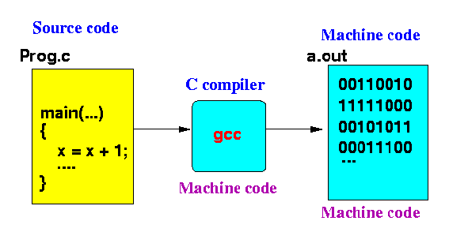

PYTHON - full course
1. Machine language
Computers only know ON and OFF (This process is mainly controlled by microlevel-transistors).
This ON / OFF process is symbolized as 1 (ON) and 0 (OFF). These are called as binary numbers.
Everything in a computer is processed by this 1 and 0. This is called as machine language.

2. What is programming language?
Programming is the process of writing instructions that tell a computer what to do.
A programming language is a language used to write those instructions so that computers can understand and execute them.
Basic flow below.

Example for programming languages: Python, Java, C, C++, C#, Ruby, Assembly & more.
3. Types of programming languages
1. Low level - close to hardware.
ex: Assembly, machine code
2. Mid level - between low and human readable.
ex: C, C++
3. High level - close to human languages (mostly English).
ex: Python, Java, JS, C#, Ruby
4. What we can do with programming skills?
1. GUI development. (App, Web, OS, Game & more)
2. Artificial intelligence.
3. Ethical hacking & Cyber security.
4. Hardware related stuffs. (Robotics, IoT)
5. Automation.
6. Data related stuffs. (Data science & Data management)
7. Scientific computing.
8. Cloud computing.
9. Blockchain.
These are just some stuffs you can do.
But there are many out there to do with your programming skills.
2. Artificial intelligence.
3. Ethical hacking & Cyber security.
4. Hardware related stuffs. (Robotics, IoT)
5. Automation.
6. Data related stuffs. (Data science & Data management)
7. Scientific computing.
8. Cloud computing.
9. Blockchain.
These are just some stuffs you can do.
But there are many out there to do with your programming skills.